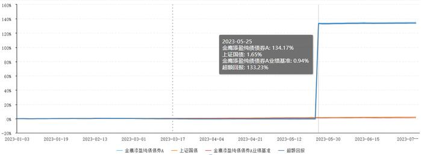

2023年07月11日 19:51 第一财经网 作者：曹璐
今年以来，相较于A股权益市场的震荡起伏，债券市场则走出了一波稳中向上的曲线。 Choice数据显示，截至7月11日收盘，偏股混合型基金指数年初至今累计下跌3.02%， 而混合债券型基金（一级）指数则同期上涨2.19%。
整体而言，债券类基金表现明显好于主动权益类基金。 数据显示，截至7月10日，约有95%的债券型基金产品今年以来的累计回报收正。 不仅如此，在基金发行缩水的背景下，更受资金青睐的债基挑起“大梁”，份额占六成以上； 在现金分红方面，债券型基金也同样“占大头”，派发“红包”超过800亿元。
在机构投资者看来，当前市场仍需要安全稳健的资产，理财资金仍有可能进一步流入债券市场。 下半年交易的主线，还将回到投资需求的本质矛盾上来，短期票息仍是市场追逐的核心。 不过，交易情绪亢奋，需注意风险。
责任编辑：薄晓舟